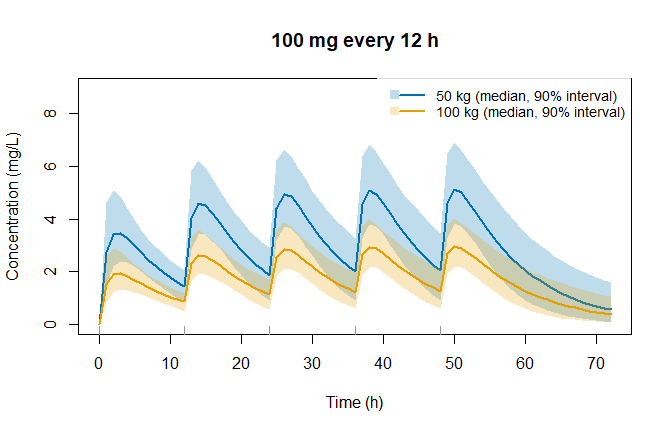

Covariates
Covariate effects are formulas on the parameters:
-
(WT / 70)^0.75fixes the exponent. -
(WT / 70)^b_wtestimates the exponent as a parameter namedb_wt. -
exp(b_age * (AGE - 40))and(SEX == 1)^b_sexare also available.
Terms can be multiplied, as in
CL ~ (WT / 70)^0.75 * (CRCL / 100)^b_crcl. Covariates must
be constant within a subject.
mod_wt <- pk_model("1cmt", route = "oral", iiv = c("CL", "V", "KA"),
covariates = list(CL ~ (WT / 70)^0.75, V ~ (WT / 70)^b_wt))
fit_wt <- bpk_fit(mod_wt, bpk_example, chains = 4, cores = 4, seed = 1)
summary(fit_wt)
#> variable mean sd q5 q50 q95 rhat ess_bulk ess_tail
#> CL 2.900 0.1170 2.710 2.900 3.100 1.00 6540 3060
#> V 28.200 1.4700 25.800 28.100 30.700 1.00 3950 2710
#> KA 0.983 0.0915 0.843 0.978 1.140 1.00 3850 2670
#> b_wt 0.856 0.2610 0.431 0.857 1.270 1.00 1160 1810
#> omega_CL 0.202 0.0308 0.156 0.199 0.257 1.00 1050 2070
#> omega_V 0.241 0.0430 0.177 0.238 0.316 1.00 1350 2250
#> omega_KA 0.375 0.0826 0.255 0.367 0.525 1.01 1680 2660
#> sigma_prop 0.156 0.0114 0.138 0.155 0.175 1.00 2020 3090bpk_example was simulated with a weight exponent of 1 on
V and 0.75 on CL, which is fixed here.
To predict for a particular subject, pass covariate values. Here, a 50 kg and a 100 kg subject on the same regimen:
reg <- dose_regimen(100, ii = 12, n = 5)
light <- predict(fit_wt, regimen = reg, covariates = list(WT = 50), times = seq(0, 72, 1))
heavy <- predict(fit_wt, regimen = reg, covariates = list(WT = 100), times = seq(0, 72, 1))
plot(light, compare = heavy, labels = c("50 kg", "100 kg"), main = "100 mg every 12 h",
xlab = "Time (h)", ylab = "Concentration (mg/L)")
plot of chunk cov-pred
Informative priors
A common reason for a Bayesian analysis is to use what is already
known, for example adult values when only a small paediatric study is
available. Priors are given with pk_priors():
-
lognormal(meanlog, sdlog)for typical values (CL,V,V1,Q,V2,KA). -
normal(mean, sd)for covariate effects (b_wt, …). -
half_normal(scale)for between-subject SDs (omega, oromega_CLfor one parameter) and residual SDs (sigma_prop,sigma_add,sigma_log).
Suppose an earlier study gave a CL of about 3 L/h with 20% uncertainty, and a weight exponent on V near 1. Now only 8 subjects are available:
small <- bpk_example[bpk_example$ID %in% c(3, 6, 9, 12, 18, 21, 24, 27), ]
pri <- pk_priors(CL = lognormal(log(3), 0.2), b_wt = normal(1, 0.25))
fit_small_weak <- bpk_fit(mod_wt, small, chains = 4, cores = 4, seed = 1)
fit_small_inf <- bpk_fit(mod_wt, small, priors = pri, chains = 4, cores = 4, seed = 1)
fit_small_inf$priors
#> quantity distribution location scale source
#> 1 CL lognormal 1.098612 0.20 user
#> 2 V lognormal 3.566312 2.00 default
#> 3 KA lognormal 0.000000 2.00 default
#> 4 b_wt normal 1.000000 0.25 user
#> 5 omega_CL half_normal 0.000000 1.00 default
#> 6 omega_V half_normal 0.000000 1.00 default
#> 7 omega_KA half_normal 0.000000 1.00 default
#> 8 sigma_prop half_normal 0.000000 0.50 defaultThe table marks which priors came from the user and which are defaults. Posterior 90% intervals with the default and the informative priors:
s1 <- summary(fit_small_weak)
s2 <- summary(fit_small_inf)
keep <- c("CL", "V", "b_wt")
data.frame(variable = keep,
default_q5 = s1$q5[match(keep, s1$variable)],
default_q95 = s1$q95[match(keep, s1$variable)],
informative_q5 = s2$q5[match(keep, s2$variable)],
informative_q95 = s2$q95[match(keep, s2$variable)])
#> variable default_q5 default_q95 informative_q5 informative_q95
#> 1 CL 2.317795 3.417294 2.4659782 3.355258
#> 2 V 22.206631 35.309272 24.2506442 36.200781
#> 3 b_wt -0.720297 1.499585 0.5973676 1.378400Is the result driven by the prior?
prior_sensitivity() scales the prior and the likelihood
up and down (power-scaling, with the priorsense package) and reports
which parameters respond. The flags “prior-data conflict” and “strong
prior / weak likelihood” mean that the conclusion depends on the prior.
In that case, report the prior and justify it.
prior_sensitivity(fit_small_inf)
#> Sensitivity based on cjs_dist
#> Prior selection: all priors
#> Likelihood selection: all data
#>
#> variable prior likelihood diagnosis
#> CL 0.027 0.019 -
#> V 0.006 0.049 -
#> KA 0.004 0.062 -
#> b_wt 0.086 0.026 potential strong prior / weak likelihood
#> omega_CL 0.031 0.055 -
#> omega_V 0.019 0.027 -
#> omega_KA 0.012 0.076 -
#> sigma_prop 0.004 0.382 -